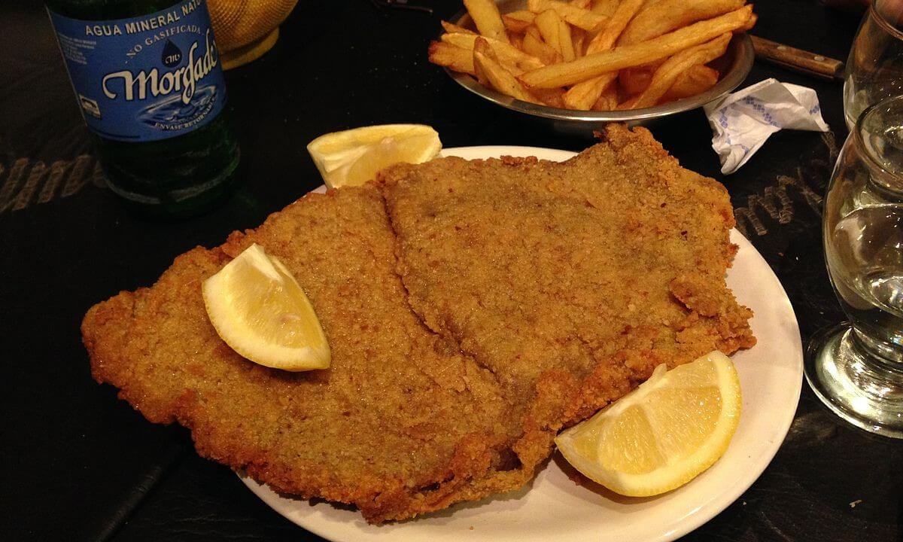

Milanesas

La milanesa se prepara con unas finas rebanadas de carne de res, pollo, ternera o a veces, cerdo. Cada rebanada se sumerge en huevos batidos que se sazonan con sal y otros condimentos según la receta, como el ajo, el perejil o el orégano. A continuación, cada rebanada se cubre generosamente con pan rallado y, a veces, harina, y se fríe ligeramente en un baño de aceite.
Ingredientes
Rinde aproximadamente 4 porciones- - 1 kg de solomillo de ternera , en rodajas finas (de aproximadamente 1 centímetro)
- - 2 huevos batidos
- - 2 dientes de ajo picados
- - 3 cucharadas de perejil picado
- - Sal
- - Pimienta negra
- - Aceite vegetal
Preparación:
- Retire el exceso de grasa y los nervios de las rebanadas de carne.
- Ablande las rebanadas de carne muy ligeramente con un mazo.
- Mezcle el ajo y el perejil con los huevos batidos, la sal y la pimienta.
- Sumerja las rebanadas de carne en los huevos batidos, mezcle bien y reserve en un lugar fresco durante 45 minutos.
- Vierta el aceite en una sartén a fuego medio-alto y caliente a 170°C.
- Cubra generosamente cada rebanada de carne con el pan rallado.
- Fría la milanesa unos minutos por cada lado.
- Retírela de la sartén y colóquela en un plato forrado con toallas de papel.